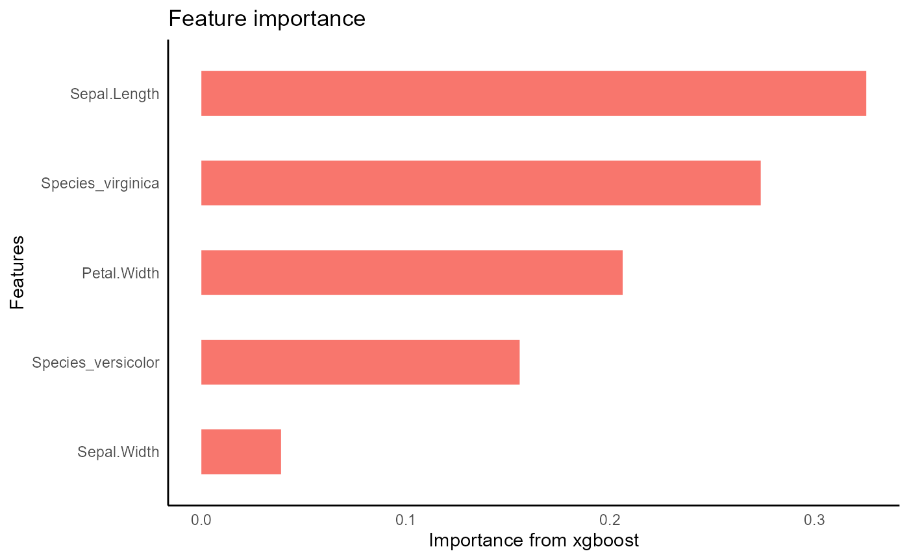

library(autostats)
library(workflows)
library(dplyr)
library(tune)
library(rsample)
library(hardhat)autostats provides convenient wrappers for modeling, visualizing, and predicting using a tidy workflow. The emphasis is on rapid iteration and quick results using an intuitive interface based off the tibble and tidy_formula.
Set up the iris data set for modeling. Create dummies and any new columns before making the formula. This way the same formula can be use throughout the modeling and prediction process.
set.seed(34)
iris %>%
dplyr::as_tibble() %>%
framecleaner::create_dummies(remove_first_dummy = TRUE) -> iris1
#> 1 column(s) have become 2 dummy columns
iris1 %>%
tidy_formula(target = Petal.Length) -> petal_form
petal_form
#> Petal.Length ~ Sepal.Length + Sepal.Width + Petal.Width + Species_versicolor +
#> Species_virginica
#> <environment: 0x7feba68505f8>Use the rsample package to split into train and validation sets.
iris1 %>%
rsample::initial_split() -> iris_split
iris_split %>%
rsample::analysis() -> iris_train
iris_split %>%
rsample::assessment() -> iris_val
iris_split
#> <Analysis/Assess/Total>
#> <112/38/150>Fit models to the training set using the formula to predict Petal.Length. Variable importance using gain for each xgboost model can be visualized.
auto_tune_xgboost returns a workflow object with tuned parameters and requires some postprocessing to get a traind xgb.Booster object like tidy_xgboost. Tuning iterations set to 1 just so the vignette builds quickly. Default is n_iter = 100
iris_train %>%
auto_tune_xgboost(formula = petal_form, n_iter = 1L) -> xgb_tuned
#>
#> > Generating a set of 10 initial parameter results
#> ! Fold1: internal: A correlation computation is required, but `estimate` is const...
#> ! Fold2: internal: A correlation computation is required, but `estimate` is const...
#> ! Fold3: internal: A correlation computation is required, but `estimate` is const...
#> ! Fold4: internal: A correlation computation is required, but `estimate` is const...
#> ! Fold5: internal: A correlation computation is required, but `estimate` is const...
#> ✓ Initialization complete
#>
#> Optimizing rmse using the expected improvement
#>
#> ── Iteration 1 ─────────────────────────────────────────────────────────────────
#>
#> i Current best: rmse=0.354 (@iter 0)
#> i Gaussian process model
#> ✓ Gaussian process model
#> i Generating 5000 candidates
#> i Predicted candidates
#> i mtry=1, trees=8, min_n=32, tree_depth=13, learn_rate=0.0103,
#> loss_reduction=0.00135, sample_size=0.884
#> i Estimating performance
#> ! Fold1: preprocessor 1/1, model 1/1: `early_stop` was reduced to 7.
#> ! Fold2: preprocessor 1/1, model 1/1: `early_stop` was reduced to 7.
#> ! Fold3: preprocessor 1/1, model 1/1: `early_stop` was reduced to 7.
#> ! Fold4: preprocessor 1/1, model 1/1: `early_stop` was reduced to 7.
#> ! Fold5: preprocessor 1/1, model 1/1: `early_stop` was reduced to 7.
#> ✓ Estimating performance
#> ⓧ Newest results: rmse=3.36 (+/-0.113)
xgb_tuned %>%
fit(iris_train) %>%
hardhat::extract_fit_engine() -> xgb_tuned_fit
xgb_tuned_fit %>%
visualize_model()
iris_train %>%
tidy_xgboost(formula = petal_form) -> xgb_base
#> Warning: `early_stop` was reduced to 14.
xgb_base %>%
visualize_model()
iris_train %>%
tidy_xgboost(petal_form,
trees = 500,
tree_depth = 3,
sample_size = .5,
mtry = 3,
min_n = 4) -> xgb_opt
#> Warning: `early_stop` was reduced to 499.
xgb_opt %>%
visualize_model()automated gradient descent boosting with information-criterion heuristics that don’t need tuning
iris_train %>%
tidy_agtboost(petal_form) -> agtb
#> no dummies were created
Predictions are iteratively added to the validation data frame. The name of the column is automatically created using the models name and the prediction target.
xgb_tuned_fit %>%
tidy_predict(newdata = iris_val, form = petal_form) -> iris_val1
xgb_base %>%
tidy_predict(newdata = iris_val1, form = petal_form) -> iris_val2
xgb_opt %>%
tidy_predict(newdata = iris_val2, petal_form) -> iris_val3
agtb %>%
tidy_predict(newdata = iris_val3, petal_form)-> iris_val4
iris_val4 %>%
names()
#> [1] "Sepal.Length" "Sepal.Width"
#> [3] "Petal.Length" "Petal.Width"
#> [5] "Species_versicolor" "Species_virginica"
#> [7] "Petal.Length_preds_xgb_tuned_fit" "Petal.Length_preds_xgb_base"
#> [9] "Petal.Length_preds_xgb_opt" "Petal.Length_preds_agtb"
bind_rows(
iris_val4 %>%
yardstick::rmse(truth = Petal.Length, estimate = Petal.Length_preds_xgb_tuned_fit) %>%
mutate(model = "tuned"),
iris_val4 %>%
yardstick::rmse(truth = Petal.Length, estimate = Petal.Length_preds_xgb_base) %>%
mutate(model = "baseline"),
iris_val4 %>%
yardstick::rmse(truth = Petal.Length, estimate = Petal.Length_preds_xgb_opt) %>%
mutate(model = "hand_picked"),
iris_val4 %>%
yardstick::rmse(truth = Petal.Length, estimate = Petal.Length_preds_agtb) %>%
mutate(model = "agtboost")
)
#> # A tibble: 4 × 4
#> .metric .estimator .estimate model
#> <chr> <chr> <dbl> <chr>
#> 1 rmse standard 0.338 tuned
#> 2 rmse standard 0.352 baseline
#> 3 rmse standard 0.364 hand_picked
#> 4 rmse standard 0.317 agtboost